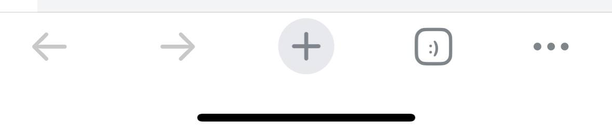
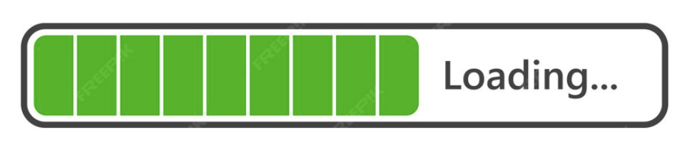
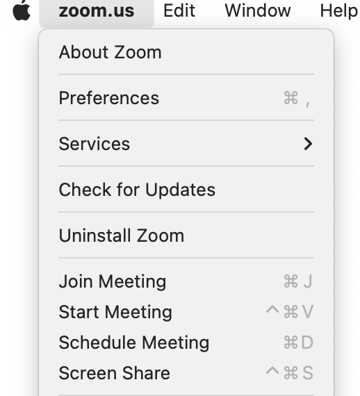
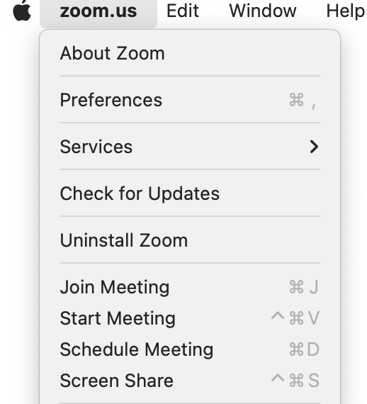

Я переконана, що багатокрапки забагато в наших інтерфейсах. Вона всюди і це призводить до неузгодженого використання та захаращення дизайну.
Я пишу цю статтю як відповідь на статтю Джона Сайто «The Mighty Ellipsis». Я не ставлю під сумнів аргументи автора про те, що багатокрапка чудовий індикатор «Додаткових дій» або Меню:
Я також погоджуюся, що багатокрапка необхідна для відображення дії «Зачекайте трішки» або «В процесі»:
І, звісно, без сумніву, ми повинні ставити їх, коли не вистачає місця для тексту:

Однак, я хотіла б посперечатися з необхідністю трьох крапок для вираження "Є наступне рішення". Використання трьох крапок у цьому контексті — це кошмар.

Наводжу аргументи:
1. Неповага до користувачів
Отже, ми особливим чином показуємо, що натискання кнопки веде до іншої дії. Навіщо? Таким чином ми недооцінюємо інтелектуальні здібності користувачів. Я впевнена, що користувачі чітко розуміють, що станеться, коли вони натиснуть "Системні налаштування" або "App Store", навіть без трьох крапок.
2. Непотрібність у порівнянні з іншими інструментами
Якщо ми зріло дбаємо про користувачів, ми повинні доводити до досконалості потоки користувача, UI та UX. Давайте додавати повідомлення для підтвердження, інформаційні підказки та створювати ідеальні тексти — це допоможе уникнути помилок, а не три крапки.
3. Нескінченна непослідовність
Три крапки неможливо використовувати послідовно. Ось меню "Допомога" у Slack. Slack чудовий, я його люблю, тож нічого особистого. На його місці міг би бути будь-хто :) Але мені потрібно проілюструвати свою думку.
"Що нового..." та "Примітки до випуску" написані по-різному, хоча користувачі бачать дуже схожі фрагменти тексту:


Хоча ви ніяк не можете взаємодіяти зі сторінкою "Що нового...", ви можете використовувати меню та пошук на сторінці "Примітки до випуску". Я не бачу логіки в цих трьох крапках. Це лише створює додаткову непослідовність та плутанину.
Невеликий бонус від Slack:
4. Візуальний шум
Досягнення справжньої простоти коштує UX-райтерам та дизайнерам величезних зусиль. І тут з'являються три крапки :) Просто порівняйте:
 

Стаття "The Mighty Ellipsis" була написана у 2016 році, і UX-райтери досі використовують її як джерело істини. Однак три крапки стали пережитком. Сучасний світ більше не потребує їх у такій кількості.